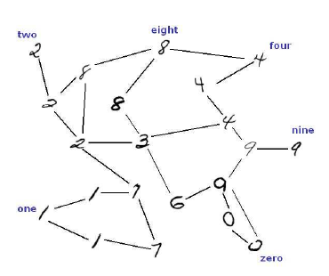
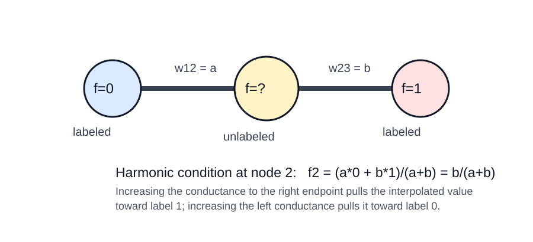

Paper: Zhu, Xiaojin; Ghahramani, Zoubin; Lafferty, John.
“Semi-Supervised Learning Using Gaussian Fields and Harmonic Functions.”
ICML 2003. Reviewer: Reviewer-P05 Auditor: Auditor-P05 Status: revised
after audit Date: 2026-05-15 Source manifest ID: P05 Canonical reading
copy:
/Users/pgajer/current_projects/grip/papers/data_to_geodesic_embedding_paper/literature/conductance_kernel_laplacian_review/sources/pdf/P05_zhu_ghahramani_lafferty_gaussian_fields_harmonic_functions.pdf
W gives \(P = D^{-1} W\); labeled nodes can be
absorbing boundaries.This paper turns semi-supervised classification into a graph interpolation problem. Every labeled or unlabeled example is a node in a weighted graph. A high edge weight means “these two examples should probably have similar labels.” The known labels are fixed boundary values. The unknown labels are not learned by fitting a parametric classifier first; they are solved as the smoothest real-valued function on the graph that agrees with the labeled nodes.
The central object is a function f on graph vertices.
For binary labels, labeled nodes have \(f=0\) or \(f=1\); unlabeled nodes get values between 0
and 1. A node with value near 1 is classified as class 1, but the paper
also shows why a plain \(1/2\)
threshold can fail when graph weights create badly unbalanced masses.
The method is called “harmonic” because each unlabeled value is a
weighted average of its neighbors. It is also a Gaussian random field
because the quadratic smoothness energy defines a Gaussian distribution
over all possible functions that match the labels; the harmonic function
is the mean/mode of that field.
For the H005 conductance review, the paper is important because it treats graph weights as conductances. The weight formula determines how labels, heat, voltage, or random-walk hitting probabilities propagate through the graph. Changing the kernel bandwidth or the feature-wise length scales changes the interpolating function even when the labeled data are unchanged.
The paper addresses semi-supervised learning with many unlabeled examples and few labeled examples. The authors motivate the setting by the cost of labels and by the idea that unlabeled data reveal a “manifold structure” on which nearby examples should have similar classifications (Introduction, pp. 1-2). [explicit]
The proposed method differs from discrete-label Markov random fields and graph mincut approaches by using a continuous Gaussian field over real-valued functions, not a discrete field over labels. The authors claim this relaxation gives a unique most probable configuration with a closed-form harmonic solution computable by matrix methods or loopy belief propagation (Introduction, p. 1; Section 3.3, p. 4). [explicit]
The paper’s own application framing is classification, not general graph signal smoothing. However, the mathematical core is graph interpolation/regression from boundary values: solve a Laplacian Dirichlet problem on unlabeled nodes. That is why it is relevant to length/kernel-conductance smoothing in H005. [derived]
The basic algorithm is harmonic energy minimization:
The paper also gives two extensions:
eta
control how strongly the external prediction pulls the harmonic solution
(Section 5, Eq. 10, p. 4). [explicit]Data are l labeled points \((x_{1},y_{1}),\ldots,(x_{l},y_{l})\) and
u unlabeled points \(x_{l+1},\ldots,x_{l+u}\), with \(n=l+u\); initially labels are binary
y in {0,1} (Section 2, p. 2). [explicit]
Feature-weighted Gaussian affinity:
\[ \begin{aligned} w_{ij} &= \exp( - sum_{d=1}^m ((x_{id} - x_{jd})^2 / sigma_{d}^2) ) \end{aligned} \]
This is Eq. 1 (p. 2). The \(sigma_{d}\) are feature-wise length-scale
hyperparameters. Larger \(sigma_{d}\)
makes dimension d less influential; smaller \(sigma_{d}\) makes the weight more sensitive
to that dimension. [explicit]
Graph energy:
\[ \begin{aligned} E(f) &= (1/2) sum_{i,j} w_{ij} (f(i)-f(j))^2 \end{aligned} \]
This is Eq. 2 (p. 2). It penalizes label variation across high-weight
edges. If \(w_{ij}\) is large, a
difference between f(i) and f(j) is expensive.
[explicit]
Gaussian field:
\[ \begin{aligned} p_{\beta}(f) &= \exp(-\beta E(f)) / Z_{\beta} \\ Z_{\beta} &= integral_{f_{L}=f_{l}} \exp(-\beta E(f)) df \end{aligned} \]
This appears immediately after Eq. 2 (p. 2). The field is constrained to match the labeled boundary values. [explicit]
Laplacian and harmonic property:
\[ \begin{aligned} \Delta &= D - W \\ D &= diag(d_{i}), d_{i} = sum_{j} w_{ij} \\ \Delta f &= 0 on U, f_{L} = f_{l} on L \\ f(j) &= (1/d_{j}) sum_{i~j} w_{ij} f(i), for j=l+1,\ldots,l+u \\ P &= D^{-1} W, so f = P f on U \end{aligned} \]
The average-value relation is Eq. 3 (p. 2). It is the local interpolation rule: an unlabeled node equals the weighted mean of neighbors. [explicit]
Block solution:
\[ \begin{aligned} W &= [ W_{ll} W_{lu} \\ W_{ul} W_{uu} ] \\ f_{u} &= (D_{uu} - W_{uu})^{-1} W_{ul} f_{l} \\ &= (I - P_{uu})^{-1} P_{ul} f_{l} \end{aligned} \]
This is Eqs. 4-5 (p. 2). It is the main linear solve. [explicit]
Heat kernel and Green’s function on the unlabeled subgraph:
\[ \begin{aligned} K_{t} &= \exp(t \Delta) on the full graph \\ K'_t &= \exp(-t \Delta_{uu}) with Dirichlet boundary \\ G &= integral_{0}^infty K'_t dt \\ &= integral_{0}^infty \exp(-t \Delta_{uu}) dt \\ &= (D_{uu} - W_{uu})^{-1} \end{aligned} \]
The paper defines the graph heat kernel and then the restricted
Green’s function in Section 3.2; the expression for G is
Eq. 6 (p. 3). [explicit]
Kernel-classifier view:
\[ \begin{aligned} f_{u} &= G W_{ul} f_{l} \\ f(j) &= sum_{i=1}^l sum_{k} y_{i} w_{ik} G(k,j) \end{aligned} \]
This is Eq. 7 (p. 3). It shows the harmonic solution as a specific graph-kernel classifier based on the Green’s function. [explicit]
Normalized cut comparator:
\[ \begin{aligned} R(f) &= (f^T \Delta f)/(f^T D f) \\ &= [sum_{ij} w_{ij} (f(i)-f(j))^2] / [sum_{i} d_{i} f(i)^2] \\ \Delta f &= \lambda D f \end{aligned} \]
This is Eq. 8 and the following eigenproblem (Section 3.3, p. 4). It is not the paper’s algorithm but connects the harmonic method to spectral clustering. [explicit]
Class mass normalization:
\[ \begin{aligned} class 1 mass &= sum_{i} f_{u}(i) \\ class 0 mass &= sum_{i} (1 - f_{u}(i)) \\ classify i as class 1 iff \\ q \, f_{u}(i) / sum_{i} f_{u}(i) \\ > (1-q) \, (1-f_{u}(i)) / sum_{i} (1-f_{u}(i)) \end{aligned} \]
This is Eq. 9 (p. 4). It rescales the soft masses to match prior
class proportions q and 1-q. [explicit]
External classifier/dongle solution:
\[ \begin{aligned} f_{u} &= (I - (1-eta) P_{uu})^{-1} ( (1-eta) P_{ul} f_{l} + eta h_{u} ) \end{aligned} \]
This is Eq. 10 (p. 4). \(h_{u}\) is
the external classifier’s unlabeled prediction and eta is
the transition probability to the attached dongle node. [explicit]
Entropy-based length-scale objective:
\[ \begin{aligned} H(f) &= (1/u) sum_{i=l+1}^{l+u} H_{i}(f(i)) \\ H_{i}(f(i)) &= - f(i) \log f(i) - (1-f(i)) \log(1-f(i)) \end{aligned} \]
This is Eq. 11 (p. 5). Smaller entropy means more confident values near 0 or 1. [explicit]
Smoothed transition matrix for weight learning:
\[ \begin{aligned} P_{tilde} &= \epsilon U + (1-\epsilon) P \\ U_{ij} &= 1/(l+u) \end{aligned} \]
This appears in Section 6 (p. 5), before Eq. 12. It prevents the entropy objective from being minimized by the degenerate limit \(sigma_{d} \to 0\). [explicit]
Entropy gradient pieces:
\[ \begin{aligned} dH/dsigma_{d} &= (1/u) sum_{i=l+1}^{l+u} \log((1-f(i))/f(i)) \, df(i)/dsigma_{d} \\ df_{u}/dsigma_{d} &= \\ (I - P_tilde_uu)^{-1} \\ ( dP_tilde_uu/dsigma_{d} \, f_{u} + dP_tilde_ul/dsigma_{d} \, f_{l} ) \\ dp_{ij}/dsigma_{d} &= \\ [ dw_{ij}/dsigma_{d} - p_{ij} sum_{n&=1}^{l+u} dw_{in}/dsigma_{d} ] / \\ [ sum_{n&=1}^{l+u} w_{in} ] \\ dw_{ij}/dsigma_{d} &= 2 w_{ij} (x_{id} - x_{jd})^2 / sigma_{d}^3 \end{aligned} \]
These are Eqs. 12-14 and the following derivative formula (p. 5). [explicit]
For CMN-aware entropy learning, the paper replaces f(i)
in Eq. 11 with a normalized probability bar f(i) (Eq. 15,
p. 5). In the denominator, the class-0 term uses \((1-f_{u}(i))\) multiplied by the total
class-1 mass \(sum_{j} f_{u}(j)\).
[explicit]
Text-document affinity:
\[ \begin{aligned} w_{uv} &= \exp( -(1/0.03) \, (1 - (u^T v)/(|u\Vert v|)) ) \end{aligned} \]
This is Eq. 16 (p. 6). Edges are only between 10-nearest-neighbor documents under cosine similarity, symmetrized by connecting if either document is in the other’s 10 nearest neighbors (Experimental Results, p. 6). [explicit]
Figure 1 (p. 2) shows the graph construction on scanned digits: labeled data are boundary nodes and unlabeled data are interior nodes. It is mainly conceptual, making clear that labels are clamped rather than merely used as training examples. [explicit]

Figure 2 (p. 3) demonstrates harmonic energy minimization on two synthetic datasets: three bands and two spirals. Large symbols are labeled points; other points are unlabeled. The authors state that the method follows the data structure where kNN would fail; the figure visually supports graph-geometric label propagation. [explicit]
Figure 3 (p. 6) has three digit experiments. Left: digits “1” vs. “2”; CMN improves over plain thresholding, and plain thresholding performs poorly because many \(f_{u}(j)\) values are close to 1. Middle: all 10 digits on an intentionally unbalanced dataset; CMN again improves performance. Right: odd vs. even digits; adding a voted-perceptron external classifier via Eq. 10 improves accuracy over either harmonic or perceptron information alone. [explicit]

Figure 4 (p. 6) reports document categorization on 20 newsgroups tasks: PC vs. MAC, baseball vs. hockey, and MS-Windows vs. MAC. Harmonic energy minimization performs much better than 1NN and voted perceptron baselines on these graph/text tasks, while the improvement from class prior is less significant than on digits. [explicit]
Figure 5 (p. 7) isolates weight-matrix learning. The toy dataset has two slightly different grids connected by a few points and two labeled examples. Panel (a) shows the unsmoothed small-sigma failure, where \(H \to 0\) as \(\sigma \to 0\) and the tighter grid invades the sparser one. Panel (b) shows the useful result at \(\sigma=0.67\) with smoothing \(\epsilon=0.01\). Panel (c) shows that smoothing removes the nuisance entropy minimum near zero. [explicit]

Table 1 (p. 8) shows entropy and accuracy before and after learning \(\sigma\) values for digits “1” vs. “2”: entropy decreases from 0.6931 to 0.6542 bits; CMN accuracy rises from \(97.25 +/- 0.73%\) to \(98.56 +/- 0.43%\); threshold accuracy rises from \(94.70 +/- 1.19%\) to \(98.02 +/- 0.39%\). [explicit]
Figure 6 (p. 8) visualizes learned feature-wise \(sigma_{i}\) values for “1” vs. “2”: average “1”, average “2”, initial sigmas, learned sigmas. The authors say learned parameters exaggerate variations within class “1” while suppressing variations within class “2”, compensating for class tightness differences in feature space. [explicit]

The minimum-energy function is harmonic: it satisfies \(\Delta f = 0\) on unlabeled nodes and equals the labels on labeled nodes (Section 2, p. 2). [explicit]
The harmonic solution is unique by the maximum principle and is either constant or has \(0 < f(j) < 1\) for unlabeled nodes (Section 2, p. 2). [explicit]
The random-walk interpretation says f(i) is the
probability that a walk starting at unlabeled node i hits a
labeled node with label 1 before hitting a labeled node with label 0
(Section 3.1, p. 3). [explicit]
The electrical-network interpretation treats graph edges as resistors
with conductance W; label-1 nodes attach to positive
voltage and label-0 nodes to ground, so \(f_{u}\) gives node voltages and minimizes
energy dissipation (Section 3.1, p. 3). [explicit]
The Green’s function interpretation connects the harmonic solution to an integral over heat diffusion on the unlabeled subgraph with Dirichlet boundary conditions (Section 3.2, Eq. 6, p. 3). [explicit]
For multi-label discrete random fields, the authors state that lowest-energy configurations are typically NP-hard, while the harmonic Gaussian-field solution can be computed efficiently using matrix methods even in the multi-label case (Introduction p. 1; Section 3.3 p. 4). [explicit]
The paper does not prove continuum convergence of graph Laplacians to manifold operators. It uses manifold-structure language and spectral connections, but the technical development is finite-graph harmonic interpolation. [contextual]
The method relies heavily on the graph weight matrix W;
the authors explicitly say the right graph is often unclear and may need
to be learned from data (Introduction p. 2; Section 6 p. 5).
[explicit]
Plain harmonic thresholding can produce severely unbalanced
classifications when W is poorly estimated or does not
reflect the classification goal (Section 4, p. 4). [explicit]
The base paper assumes labeled data are noise-free and clamps them exactly. The authors note that if this assumption is doubtful, one could attach dongles to labeled nodes too and move the labels onto those new nodes (Section 5, p. 5). [explicit]
The entropy criterion for learning weights is heuristic. The authors justify it intuitively and experimentally, but also note a degeneracy as \(sigma_{d} \to 0\) and introduce PageRank-style smoothing to avoid the nuisance minimum (Section 6, p. 5; Figure 5, p. 7). [explicit]
The experiments are early-2000s benchmarks: synthetic data, handwritten digits, and 20 newsgroups. They show the method’s promise but do not settle modern scalability, calibration, or robustness questions. [contextual]
This paper is a canonical finite-graph formulation of semi-supervised
learning as harmonic extension from labeled boundary nodes. Its
importance for H005 is that the same Laplacian machinery underlies
graph-based interpolation, regression, diffusion, and smoothing; the
only thing that changes across many later methods is how W,
D, normalization, and boundary/regularization terms are
chosen. [contextual]
The paper is also methodologically valuable because it gives several equivalent readings of the same linear system: Gaussian field mean/mode, energy minimizer, random-walk hitting probability, electrical potential, Green’s-function kernel classifier, and spectral graph object (Sections 2-3, pp. 2-4). [explicit]
Gaussian feature-space affinity (Eq. 1, p. 2):
\[ \begin{aligned} w_{ij} &= \exp( - sum_{d} (x_{id} - x_{jd})^2 / sigma_{d}^2 ) \end{aligned} \]
Evidence: [explicit]. The authors present this as an example when \(x in \mathbb{R}^{m}\). They call \(sigma_{1},\ldots,sigma_{m}\) length-scale hyperparameters. They also say other weightings may be more appropriate for discrete or symbolic data. [explicit]
Text graph affinity (Eq. 16, p. 6):
\[ \begin{aligned} w_{uv} &= \exp( -(1/0.03) \, (1 - cosine(u,v)) ) \\ cosine(u,v) &= u^T v / (|u\Vert v|) \end{aligned} \]
Evidence: [explicit]. The edge set is 10-nearest-neighbor under
cosine similarity with mutual-or condition: connect if u is
among v’s 10 nearest neighbors or vice versa.
[explicit]
Conductance interpretation:
\[ \begin{aligned} edge conductance c_{ij} &= w_{ij} \\ edge resistance r_{ij} &= 1/w_{ij} \end{aligned} \]
Evidence: [explicit for conductance; derived for resistance]. Section
3.1 says to imagine edges as resistors with conductance W.
Resistance is the reciprocal of conductance by the standard
electrical-network interpretation. [explicit/derived]
Transition probabilities:
\[ \begin{aligned} P &= D^{-1} W \\ P_{ij} &= w_{ij} / d_{i} \\ d_{i} &= sum_{j} w_{ij} \end{aligned} \]
Evidence: [explicit]. The paper writes \(f = P f\), \(P = D^{-1} W\) after Eq. 3 (p. 2). The random-walk interpretation in Section 3.1 uses \(P_{ij}\) as the one-step transition probability. [explicit]
Green’s-function kernel:
\[ \begin{aligned} G &= (D_{uu} - W_{uu})^{-1} \end{aligned} \]
Evidence: [explicit]. Eq. 6 defines G as the inverse of
the restricted Laplacian and as the time integral of the heat kernel on
the unlabeled subgraph. Eq. 7 uses G in a kernel-classifier
representation. [explicit]
Smoothed transition matrix for learned weights:
\[ \begin{aligned} P_{tilde} &= \epsilon U + (1-\epsilon) P \end{aligned} \]
Evidence: [explicit]. Section 6 uses this smoothing to avoid a degeneracy in entropy minimization. [explicit]
The primary operator is the combinatorial Laplacian \(\Delta = D - W\) (Section 2, p. 2). [explicit]
The Dirichlet operator solved on unlabeled nodes is \(\Delta_{uu} = D_{uu} - W_{uu}\); its
inverse gives the Green’s function G (Eq. 6, p. 3).
[explicit]
The Markov operator is \(P = D^{-1} W\); the harmonic condition can be written \(f = P f\) on unlabeled nodes (Section 2, p. 2). [explicit]
The paper contrasts the full heat kernel \(K_{t} = \exp(t \Delta)\) with the restricted heat kernel \(K'_t = \exp(-t \Delta_{uu})\). The sign convention in the rendered PDF uses \(K_{t} = e^{t \Delta}\) for the full graph and \(K'_t = e^{-t \Delta_{uu}}\) for the positive restricted Laplacian; the key use is the integral inverse in Eq. 6. [explicit/contextual]
Primary task: semi-supervised classification by graph harmonic interpolation from labeled nodes to unlabeled nodes. [explicit]
Mathematical task: Dirichlet graph regression/interpolation with hard boundary labels. [derived]
Related tasks discussed: spectral clustering, graph mincuts, graph kernels, random-walk hitting probabilities, electrical networks, and feature/length-scale selection by entropy minimization. [explicit]
The authors want to exploit unlabeled data because labels can be costly, and unlabeled examples can reveal data-manifold structure (Introduction, p. 1). [explicit]
They adopt continuous Gaussian fields because the most probable configuration is unique, harmonic, and available in closed form, unlike many discrete multi-label random fields (Introduction, p. 1; Section 3.3, p. 4). [explicit]
They include class priors because the graph structure W
can be poorly estimated and may not reflect the classification goal
(Section 4, p. 4). [explicit]
They include external classifiers because a graph-only manifold may be insufficient; the dongle construction combines supervised predictions with harmonic energy minimization (Introduction p. 2; Section 5 p. 4). [explicit]
They propose entropy minimization for learning weights because ordinary likelihood is not appropriate when labeled values are fixed and unlabeled data do not have a generative model (Section 6, p. 5). [explicit]
The paper implies that bandwidth or conductance selection is part of the model, not a preprocessing detail. Eq. 1 sets all label propagation, and Section 6 learns \(sigma_{d}\) to alter graph geometry. [derived]
The paper implies that graph smoothness can act as nonparametric regression: labels are boundary values and predictions are interpolated interior values. This is not presented as “regression” terminology, but the linear system is exactly harmonic extension. [derived]
The paper implies that class-prior correction is a calibration layer on top of graph interpolation. CMN does not change the harmonic solve; it rescales the resulting masses for decision making. [derived]
High weights force f(i) and f(j) to be
close in the energy E(f). Thus the chosen kernel controls
where sharp label transitions are cheap or expensive. [derived from Eq.
2]
In the random-walk view, increasing \(w_{ij}\) increases transition probability
from i to j after row normalization, unless
all outgoing weights from i increase together. This changes
hitting probabilities and therefore class probabilities. [derived from
\(P=D^{-1}W\)]
In the electrical view, increasing \(w_{ij}\) increases conductance and decreases resistance between nodes. Voltage interpolation then pulls more strongly along that edge. [explicit/derived from Section 3.1]
In the Green’s-function view, \(G=(D_{uu}-W_{uu})^{-1}\) integrates heat flow over all times with labeled nodes as Dirichlet boundaries. Weight changes alter the restricted Laplacian spectrum, so they change both diffusion paths and smoothing length scales. [explicit/derived from Eq. 6]
In Section 6 and Figure 6, learned feature-wise \(sigma_{i}\) values reshape the graph by
making weights more or less sensitive to particular pixel dimensions. A
small \(sigma_{i}\) means dimension
i has high influence; large \(sigma_{i}\) suppresses that feature.
[explicit]
Toy three-node interpolation, matching the paper’s Eq. 3:
\[ \begin{aligned} label node 1: f1 &= 0 \\ unlabeled node 2: f2 unknown \\ label node 3: f3 &= 1 \\ w12 &= a, w23 = b \\ f2 &= (a f1 + b f3)/(a+b) = b/(a+b) \end{aligned} \]
Evidence: [derived]. This is a direct specialization of Eq. 3. It shows how conductance controls interpolation: if \(b >> a\), the middle node is close to label 1; if \(a >> b\), it is close to label 0.
The paper uses feature-wise global length scales \(sigma_{d}\), not local self-tuning bandwidths or adaptive-radius/kNN density corrections. [explicit/contextual]
It does, however, anticipate later adaptive-scale concerns by learning \(sigma_{d}\) from labeled and unlabeled data. Section 6 shows that different feature dimensions can receive different effective scales, and Figure 6 visualizes pixel-level feature selection. [explicit]
The text experiments use sparse 10-nearest-neighbor graph
construction before assigning Eq. 16 weights. This is adaptive in graph
topology through nearest-neighbor selection, but the exponential cosine
scale 0.03 itself is fixed. [explicit]
The entropy degeneracy as \(\sigma \to 0\) is directly relevant to H005’s conductance choices: a kernel can become too local, producing hard nearest-neighbor-like propagation rather than stable smoothing (Section 6, p. 5; Figure 5, p. 7). [derived]
The paper does not claim that Eq. 1 is the universally correct weight
formula. It says other weightings are possible and may be more
appropriate for discrete or symbolic x (Section 2, p. 2).
[explicit]
The paper does not provide manifold convergence theorems for \(\Delta\), P, or
G. [contextual]
The paper does not study graph low-pass filtering as a signal-processing task, although its harmonic solution is a smoothing/interpolation operator. [contextual]
The paper does not use current gflow overlap-density/Riemannian-complex conductance, inverse-length conductance, or kernel-conductance comparators. Any connection to those H005 variants is our synthesis, not an author claim. [contextual]
The paper does not soften the labeled boundary values in the main method; labels are clamped. It only suggests a dongle variant if labels may be noisy (Section 5, p. 5). [explicit]
For SIMODS/gflow, this paper is best treated as a reference model for graph Dirichlet interpolation. Given a weighted graph and boundary values, the prediction is obtained by a Laplacian linear system. [derived]
The current fit.rdgraph.regression()
overlap-density/Riemannian-complex smoother must remain distinct from
this paper’s Gaussian feature-space weights. Current gflow semantics use
overlap-density conductance such as:
\[ \begin{aligned} c_{e}^\rho &= 1 / \max(rho_{1}(e), 1e-10) \end{aligned} \]
That is not in Zhu et al. 2003. [contextual]
Planned length/kernel-conductance comparators, such as:
\[ \begin{aligned} c_{e}^len &= 1 / (ell_{e} + \epsilon) \\ c_{ij} &= phi(ell_{ij}; \theta) \end{aligned} \]
are closer in spirit to this paper because they make the conductance/kernel choice the object that shapes the Laplacian solve. But the exact formulas in Zhu et al. are Eq. 1 for Euclidean features and Eq. 16 for cosine text features. [contextual]
The three-node example in
figures/P05_three_node_harmonic_interpolation.svg is a
useful sanity check for any gflow comparator: changing conductance alone
changes the interpolated/regressed value even when node labels and graph
topology stay fixed. [derived]
Reproduced cropped figure panels for Figures 1–6 are managed by
paper_figure_screenshots.yml and embedded in the generated
HTML memo next to the primary figure descriptions. These are
internal-review cropped figure panels from the canonical reading copy,
not manuscript-ready reused figures. [explicit]
/Users/pgajer/current_projects/grip/papers/data_to_geodesic_embedding_paper/literature/conductance_kernel_laplacian_review/figures/P05_three_node_harmonic_interpolation.svg
0 and 1.
| Claim | Label | Source reference | Notes |
|---|---|---|---|
| The method represents labeled and unlabeled examples as vertices in a weighted graph. | explicit | Abstract; Section 2, p. 2 | Figure 1 visualizes this construction. |
| Edge weights encode similarity and can be Gaussian feature-space weights. | explicit | Eq. 1, p. 2 | Other weights are allowed. |
| The energy minimized is quadratic in edge differences. | explicit | Eq. 2, p. 2 | \(1/2 \sum w_{ij} (f(i)-f(j))^2\). |
| The Gaussian field has density proportional to \(\exp(-\beta E(f))\) under label constraints. | explicit | Section 2, p. 2 | Partition function integrates over functions clamped on labeled data. |
| The minimizing function is harmonic on unlabeled nodes. | explicit | Section 2; Eq. 3, p. 2 | Weighted neighbor average. |
| The main solve is \(f_{u}=(D_{uu}-W_{uu})^{-1}W_{ul} f_{l}\). | explicit | Eq. 5, p. 2 | Equivalent Markov form uses \((I-P_{uu})^{-1}P_{ul} f_{l}\). |
f(i) is a random-walk hitting probability. |
explicit | Section 3.1, p. 3 | Label-1 absorbing boundary. |
| Edge weights can be interpreted as electrical conductances. | explicit | Section 3.1, p. 3 | The solution is node voltage. |
| The Green’s function is the inverse restricted Laplacian. | explicit | Eq. 6, p. 3 | Also integral over heat kernel. |
| The harmonic solution can be read as a kernel classifier. | explicit | Eq. 7, p. 3 | Kernel is G. |
Class mass normalization rescales decisions using class prior
q. |
explicit | Section 4; Eq. 9, p. 4 | Addresses unbalanced threshold outputs. |
| External classifiers enter through dongle nodes and Eq. 10. | explicit | Section 5, p. 4 | eta controls the pull of external predictions. |
| Weight learning minimizes average unlabeled label entropy. | explicit | Section 6; Eq. 11, p. 5 | Heuristic criterion. |
Smoothing P avoids a zero-bandwidth entropy
degeneracy. |
explicit | Section 6, p. 5; Figure 5, p. 7 | PageRank-inspired smoothing. |
| Weight/kernel selection controls graph interpolation/regression. | derived | Eqs. 2-5; Section 3.1 | Direct from energy, averaging, and conductance views. |
| The paper proves manifold convergence of the graph Laplacian. | uncertain | Not found | It discusses spectral/manifold context but gives no such theorem. |
| The paper uses gflow’s overlap-density conductance. | contextual | Not in paper | Distinct H005 context only. |
| The text-document affinity uses an exponential cosine-distance weight on a sparse 10NN graph. | explicit | Eq. 16 and surrounding text, p. 6 | Used in 20 newsgroups experiments. |
| Learned pixel-level \(sigma_{i}\) values act as feature selection. | explicit | Section 7.2; Figure 6, p. 8 | Authors state this directly in Section 6 and discuss Figure 6. |
Auditor-P05 corrected the heat-kernel sign convention: the PDF prints \(K_t=e^{-t\Delta}\), not \(e^{t\Delta}\). Use the negative exponent in the final synthesis unless explicitly changing Laplacian sign conventions.
Eq. (8)’s Rayleigh quotient numerator uses an unhalved double sum; under the standard symmetric-Laplacian convention, \[ f^\top L f = \frac12\sum_{i,j} w_{ij}(f_i-f_j)^2. \] The factor does not change the optimization but should be documented.
Outside the electrical-network interpretation, use “weight/affinity, interpretable as conductance” rather than calling every \(w_{ij}\) a conductance.
SIMODS/gflow clarification for synthesis: P05 supports graph
Laplacian and Markov/harmonic-function interpretations of weighted graph
regression. It should not be cited as describing the current
fit.rdgraph.regression() overlap-density smoother.
2026-05-15: Initial Reviewer-P05 memo drafted from the canonical 8-page PDF. All pages and figures were rendered and visually inspected. One original explanatory SVG was created.